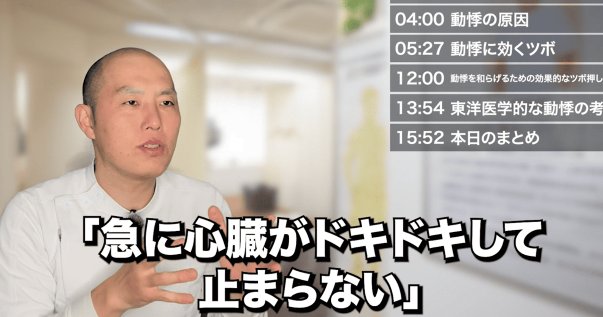
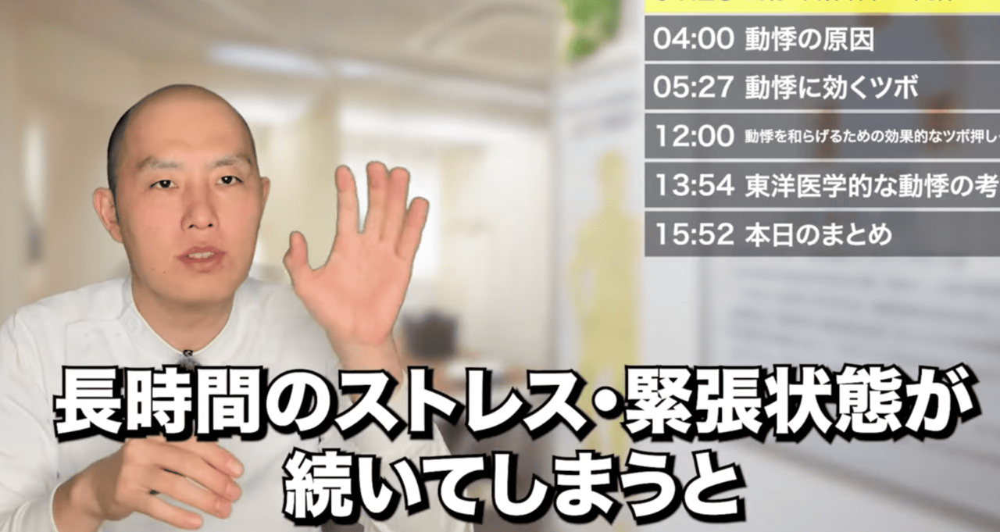
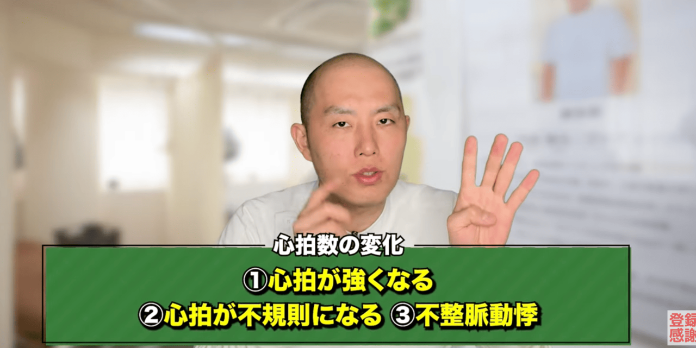
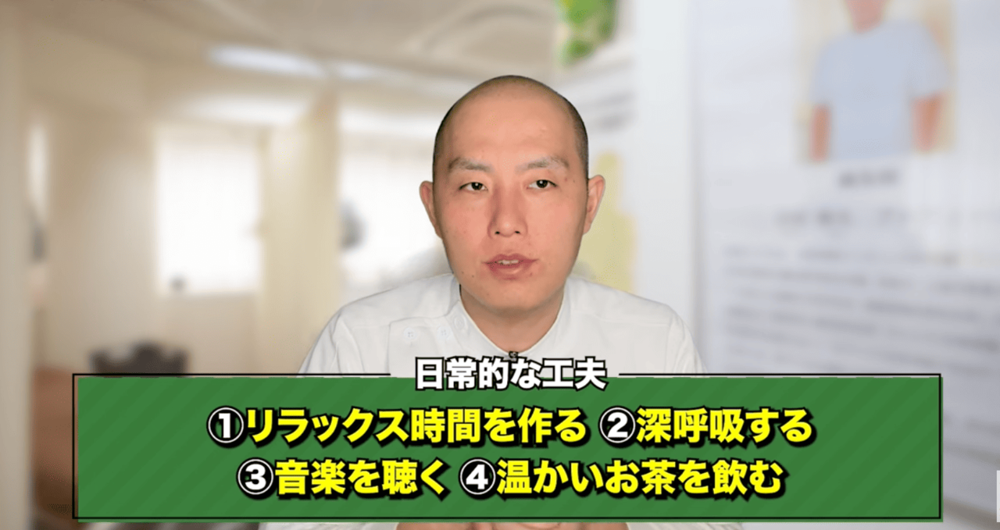
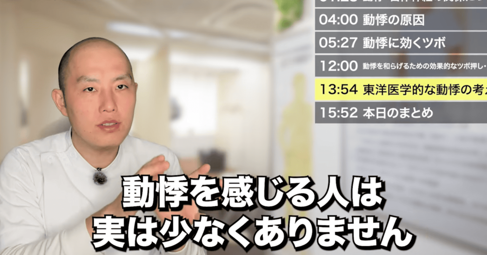

不整脈の鍼灸
脈が速い・遅い・不規則になる状態。循環器専門医での精査・治療を最優先とし、安定期には内関・神門など7つのツボと自律神経ケアで支えます。
まず知っておきたい要点と改善の流れ
不整脈は心臓の電気信号の異常により脈が速い（頻脈）・遅い（徐脈）・不規則（期外収縮・心房細動など）になる状態です。冠動脈疾患・弁膜症・心不全・高血圧・甲状腺疾患・睡眠時無呼吸などの基礎疾患に加え、ストレス・過労・睡眠不足・カフェインやアルコール過多による交感神経の過剰緊張が動悸や不整脈を悪化させます。放置すると脳梗塞や失神、心不全を招くタイプもあるため精査が重要です。（公式解説）
このようなお悩みはありませんか？
- ✓急に心臓がドキドキしたり脈が飛ぶ感覚がある
- ✓夜やストレス時に胸がざわざわして眠れない
- ✓息切れ・めまい・ふらつきや強い疲労感がある
- ✓放置して命に関わる不整脈でないか心配している
当院の施術アプローチ・改善の流れ
なぜ鍼灸で改善へ向かうのか？（作用機序の図解）
不整脈に対する鍼灸は、神経-内分泌-免疫ネットワークと末梢循環の調整機序を通じて、お体本来の回復力を引き出します。

内科専門医の薬物・食事管理を前提に、足三里・三陰交・背部経穴へ安全にアプローチします。
ストレス由来の交感神経過緊張を鎮め、ホルモン分泌や血糖・尿酸管理を乱す疲労要因を軽減します。
手足や内臓の血流を促し、合併しやすいしびれ・胃もたれ・倦怠感・関節痛の負担を和らげます。
皮膚衛生や低刺激を徹底し、日々の生活習慣改善を続けやすい安定した体調づくりを支えます。
院長YouTube解説・関連動画
不整脈は、不規則に打つ状態

不整脈は、脈がゆっくり打つ、速く打つ、または不規則に打つ状態のことです。脈が１分間に50以下の場合は徐脈、100以上の場合は頻脈といいます。
不整脈には病気が原因で発生するものと、生理的に発生するものがあります。運動や精神的興奮、発熱によって脈が速くなるのはだれにでも起こる生理的な頻脈です。
不整脈には、脈が少なくなる徐脈性不整脈、脈が増えてしまう頻脈性不整脈、脈が不規則になる期外収縮など色々な種類があります。
主な症状は、動悸、息切れ、胸痛、めまい、ふらつき、失神、体のだるさ、全身のむくみなどです。
急に心臓がドキドキして止まらない、胸がざわざわして落ち着かない、夜になると動悸が気になって眠れないなどの症状がある人も多いと思います。動悸を感じると病気かもしれないと不安になると思いますが、動悸は心臓の病気だけが原因でないことが多いです。
多くの場合の動悸の原因は自律神経の乱れです。ストレスや疲労不規則な生活習慣が知らず知らずのうちに自律神経を乱し心臓のドキドキにつながるのです。
院長も過去に動悸に悩まされたこともあります。また、当院にも動悸で悩まれている方の来院がたくさんあります。
原因は病気や薬、体質やストレス、睡眠不足など

不整脈の主な原因は、冠動脈疾患、心臓弁障害、心不全、先天性心疾患など心臓の病気、高血圧、甲状腺の病気、慢性閉塞性肺疾患などの肺の病気などの病気、薬の成分や加齢、体質、ストレス、睡眠不足、疲労などです。
高血圧､糖尿病､肥満などの生活習慣病や喫煙､アルコール､精神的ストレス､睡眠時無呼吸などの心臓に負担をかける要素が複合的に合わさって不整脈が発生することもあります。
特にBMIが高い人、タバコを吸う人、アルコールをよく飲む人は、不整脈の一種である心房細動を発症しやすいとされています。
不整脈の症状はドキドキする、脈が飛ぶ、息切れ、めまいなど

不整脈の症状は、ドキドキする、脈が飛ぶ、息切れ、めまい、胸が苦しい、気を失うなどです。
期外収縮のように一拍だけ早いタイミングで心臓が収縮する不整脈では、脈がとぶ、一瞬ドキッとする、胸が一瞬つまる、などの症状が現れます。
一定の間頻脈が続く心房細動、発作性上室性頻拍、心室頻拍などの不整脈では、ドキドキする、胸が苦しいなどの症状が多く現れます。
極端な徐脈によって、数秒以上心臓の拍出が途絶えると、脳への血流が低下することによって、気を失う、目の前が暗くなる、めまいなどの症状が現れます。
長い時間不整脈が続くと、心臓のはたらきが悪くなることがあります。その場合、息切れやむくみなどの心不全の症状が発生します。

不整脈の改善方法は主に3つです。薬、カテーテルアブレーション、手術です。
不整脈の改善には脈拍を整える抗不整脈薬が使われます。主に異常な電気信号を抑制する作用があります。また、血栓予防のために、血液をさらさらにする抗凝固薬が使われることもあります。
カテーテルアブレーションは、カテーテルと呼ばれる細い管を足のつけ根の血管から心臓の中に入れ、心臓内の組織を直接改善する方法です。焼灼や冷凍凝固法により、不整脈を引き起こす異常な電気信号が心臓全体に広がらないようにします。
手術では、心臓に外科的処置を行うことで、不整脈の原因となる異常な電気信号の通り道を断ち切ります。手術は体への負担が比較的大きい改善方法になります。そのため他の改善方法で効果が見られない場合に行われます。
🎥 他のYouTube切り抜き・解説を読む（あと1件）▼
東洋医学的な動悸の考え方
動悸はあなたを守るサインと理解しましょう。動悸は不安にさせる症状でもありますが、実は体が助けてと伝えている大切なサインです。心臓がドキドキしているのは体が全力で状況に対応しようとしている証拠なのです。動悸そのものは体の正式な反応であることを理解し、自分の体が頑張っていると前向きに捉えましょう。
ツボ押しはあなたのペースで良いです。動悸に悩むと自分だけになぜ起こるのかと不安に思うかもしれませんが動悸を感じる人は少なくありません。
当院にもたくさんいらっしゃいますが、みなさん少しずつ改善して穏やかな日常を取り戻しています。焦らずに自分のペースで向き合うことが大事です。動悸は必ず改善します。日々小さな改善を目指して、やがて大きな変化を生むと考えましょう。
日常的にできる工夫は、リラックス時間を作る、深呼吸する、音楽を聴く、温かいお茶を飲むなどです。簡単なことに思えますが、自律神経を整えてくれる方法です。
また、質の良い睡眠をとりましょう。睡眠は副交感神経を整える最大の味方です。寝る前にスマホやテレビを控えて穏やかな環境を整えて寝ましょう。
自律神経を整えるポイントはご先祖様に感謝をすることです。感謝し祈りを捧げることで脳の大脳皮質が刺激されてセロトニンとメラトニンがたくさん放出されます。長い時間する必要はありません。ありがとうございましたと念じるだけでも十分効果があります。
脳過敏症からくる動悸は鍼灸ですぐに改善します。ただし、脳過敏症候群になってしまうと動悸に耳鳴りや不安障害も併発してしまいます。訳もわからず不安に駆られているためサプリメントや薬を大量飲んで夜寝れないという人が多いですが、鍼灸で改善しやすい症状です。是非ご相談ください。

不整脈は放置しても問題がないものもあれば、放置すると命に関わる可能性があるものもあります。
不整脈によって失神したり意識が飛びそうになったりしている場合や脈が異常に速くなったり遅くなったりする場合は命に関わる可能性もあるためすぐに病院に行くことをお勧めします。
ただ、放置しても大きな問題にならない不整脈もあります。原因によって改善方法も異なるため、不整脈がある場合はきちんと調べることが大事です。
循環器・動悸・高血圧・心不全補助の全身ツボ図解
実際の施術ではお一人おひとりの体質・症状に合わせて選穴しますが、動悸・不整脈・本態性高血圧・慢性心不全の循環器治療併用サポートの臨床でよく用いられる代表的なツボの目安です。

📌 代表的なツボの詳細一覧表を開く（6穴） ▼
| ツボ名 | 位置の目安 | 主な狙い | セルフケアの注意点 |
|---|---|---|---|
| 内関（ないかん） | 手首の横ジワから指3本分肘寄りの中央 | 動悸・不整脈・狭心症補助で最も研究されている心包経の要穴 | 胸痛・冷や汗・失神がある場合は直ちに救急受診してください。 |
| 膻中（だんちゅう） | 胸の中央（胸骨上） | 胸のつかえ・交感神経の高ぶり・不安感の鎮静 | 強く押さず手のひらで温めながら深呼吸します。 |
| 神門（しんもん） | 手首の横ジワの小指側のくぼみ | 心拍の落ち着き・緊張性の動悸と不眠ケア | ペースメーカー使用時は電気鍼を避け手技のみで行います。 |
| 曲池（きょくち） | 肘を曲げた外側のシワの先端 | 血圧変動に伴う上肢・頭部の緊張緩和 | 降圧薬・心不全薬の自己判断での中止は厳禁です。 |
| 足三里（あしさんり） | 膝の下外側、指4本分下 | 末梢循環・自律神経バランスとQOL維持 | 身体負担の少ない穏やかな低刺激で行います。 |
| 太衝（たいしょう） | 足の甲、親指と人差し指の骨の間 | ストレス性の血圧上昇・末梢血管収縮の緩和 | 就寝前の優しい指圧でリラックスを促します。 |
国際査読論文の科学的エビデンス
国際的な医学データベース（PubMed・Cochrane等）で報告されている動悸・不整脈・本態性高血圧・慢性心不全の循環器治療併用サポート領域の代表的な査読済み鍼灸研究をまとめています（標準治療との併用や研究上の限界を含めて正確に掲載）。
📚 査読論文データ・PubMed出典リンクを開く（4件） ▼
| 年・研究デザイン | 対象・規模 | 主な結果 | 限界・出典 |
|---|---|---|---|
| 2026年 メタ解析 | 2型糖尿病 20 RCTs（n=1,479） | 空腹時血糖（SMD -0.52, p=0.009）、HbA1c（SMD -0.76, p=0.002）、HOMA-IR（p<0.0001）を有意低減。 | 将来研究のばらつき懸念。食事・運動・薬物療法の継続必須。 Postgrad Med J (PMID: 41052150) |
| 2025年 メタ解析 | 糖尿病性末梢神経障害（DPN）14 RCTs（n=1,169） | 偽鍼比でVAS疼痛-1.44cm、神経症状スコアTCSSも有意改善（WMD -1.22）。 | GRADE確実性は低い。足部の熱傷・感染予防に細心の注意。 Curr Pain Headache Rep (PMID: 40220243) |
| 2024年 メタ解析 | 橋本病（慢性甲状腺炎）14 RCTs（n=1,020） | レボチロキシン単独比でTPOAb・TGAb低下およびTSH・FT3・FT4の調整を示唆（p<0.00001）。 | 中国国内RCT中心・盲検化不足。甲状腺薬の自己中断は厳禁。 Medicine (PMID: 38428856) |
| 2024年 メタ解析 | 単純性肥満 25 RCTs（n=2,018・生活習慣併用） | 生活習慣単独比で体重-4.73・BMI -2.11・腹囲-4.96（p<0.00001）、中性脂肪・LDLも有意改善。 | 介入期間・方法の異質性高、長期リバウンド防止は要検証。 Diabetes Metab Syndr Obes (PMID: 39582784) |
参考文献・出典
- 銀座そうぜん鍼灸院「不整脈の公式解説ページ」
- 2026年 メタ解析（2型糖尿病 20 RCTs（n=1,479））— Postgrad Med J (PMID: 41052150)
- 2025年 メタ解析（糖尿病性末梢神経障害（DPN）14 RCTs（n=1,169））— Curr Pain Headache Rep (PMID: 40220243)
- 2024年 メタ解析（橋本病（慢性甲状腺炎）14 RCTs（n=1,020））— Medicine (PMID: 38428856)
- 2024年 メタ解析（単純性肥満 25 RCTs（n=2,018・生活習慣併用））— Diabetes Metab Syndr Obes (PMID: 39582784)
よくある質問（FAQ）
Q. 動悸や不整脈に役立つセルフケアのツボはありますか？▼
Q. 病院の検査を受ける前に鍼灸へ通ってもよいですか？▼
あわせて読まれる関連疾患（内分泌のお悩み）
正常な拍動の間に不規則な拍動が混じり脈が飛ぶ不整脈。心疾患の有無を医師に確認したうえで、自律神経と生活リズムを整えるケアを行います。
血管が硬く柔軟性を失う状態。医療機関での生活習慣病管理と並行し、合谷・内関・太衝のツボや自律神経ケアで巡りを支えます。
副腎髄質などの腫瘍からカテコールアミンが過剰分泌される疾患です。専門医の手術・薬物管理を最優先に、術後や安定期の自律神経ケアを支えます。
甲状腺ホルモンが過剰に分泌され全身の代謝が亢進する疾患。専門医の治療と並行し、自律神経と休息を整える補完ケアを行います。
皮膚の下に余分な水分がたまる状態。腎臓・心臓・肝臓等の基礎疾患確認を優先し、血流低下や自律神経由来のむくみを穏やかに整えます。
脳下垂体の良性腫瘍により成長ホルモンが過剰分泌される疾患。専門医の手術・薬物療法と合併症管理を最優先し、安定期の体調ケアを補完します。
おひとりで悩まず、まずはご相談ください
銀座本院・川口・大宮・横浜・博多・田無の各院でご予約を承っております。